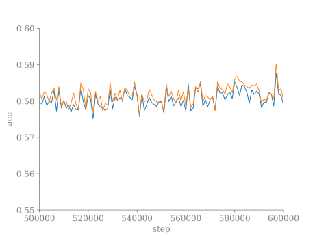

Mid-Training Untying: A Fix That Barely Fixes Anything.
Background
Last year, I dedicated some time to study from a theoretical perspective the effect of weight tying . This is technique that involves using the same parameters for the embedding and unembedding layer. Empirically, this technique has two benefits: 1) It halve the memory necessary to store this usually big matrices, and 2) it boost performance early in training.
However, this technique is typically applied only to natural language models. Why is that? Well, for it to work properly, the data must have very specific properties—and natural language data largely satisfy these requirements. I recommend checking out the paper we wrote on this topic . You can also have a look to this post if you want a less technical discussion.
In summary, semantically similar tokens tend to cluster together in the embedding space, while tokens with similar conditional probabilities should be close in the unembedding space (and vice versa). If our data naturally align such that semantic similarity implies conditional similarity (and vice versa), then everything works smoothly, and training proceeds efficiently. This is because semantic and conditional information can reinforce each other.
However, if semantic similarity corresponds to conditional differences, we end up with tokens that want to be close in the embedding space but far apart in the unembedding space. I’ll leave it to you to imagine how that turns out.
While this data alignment occurs to some extent in natural language, it is not perfect. There are pairs of words that are semantically similar but appear in completely different distributions. For example, the words begin and commence have very similar meanings, but one is used in informal language while the other is more formal. This means we have a strong alignment, but not a perfect one.
The Idea
In my view, this suggests that weight tying can be highly beneficial early in training. However, later in training, it may introduce instabilities, as small misalignments in the data cannot be properly reflected in the embeddings. So, how do we get the best of both worlds? Well, we simply untie the embeddings mid-training.
Results
I started working on the code to test this hypothesis (repo is public). I used a simple BERT-like architecture with a masked language modeling task. For the dataset, I chose Wikitext , as it is not too large for a preliminary single-GPU run.
From there, it was a cycle of running training, fixing bugs, and repeating the process. However, at this point I am fairly convinced that this approach does not lead to substantial improvements—at least not results that are publishable. Here is what the validation accuracy looks like over 100 epochs of training.
The second plot is a zoomed-in version of the first. The blue line represents training with tied embeddings from the start to the end of the 100th epoch. At step 100k, I untied the embedding matrices and allowed training to proceed, as shown by the orange plot.
The untied model appears to be slightly more performant, but the improvement is so small that you really need to zoom in to notice it. What about the test set? On the test set at epoch 30, the untied model achieved an accuracy of \(0.5737\) compared to \(0.5724\) for the tied model. At epoch 100, the untied model achieved \(0.5867\) while the tied model achieved \(0.5869\). Essentially, there is no significant difference until you look at the third decimal place.
I had sincerely expected a more pronounced improvement, or at least a greater difference between the two models. Additionally, if you zoom in on the x-axis, you can see that the untied model closely follows the tied one (see the plot below). I double-checked whether the two embedding matrices diverge, and I can confirm that they do during training. However, the overall behavior remains extremely similar even after 400k gradient steps.
To me, this remains suspicious behavior that hints at a potential bug. However, every check I performed confirms that the run is legitimate.
Conclusion
What conclusions should we draw here? Firstly, tying or untying the embeddings mid-training does not seem to matter significantly. If you had a similar idea, I guess this might not be the best path to explore—at least not based on what I have observed so far. Additionally, it remains unclear why the untied model so closely mirrors the tied one.
This is a negative results. It is always a little bit disappointing to spend time on one of your idea that ends up not working. Fortunately, this was a simple idea and it was fairly easy to set up a small experiment to test it. So not that much time was wasted. This things are part of the game.
If you decide to continue from where I left off, please let me know—I would be curious to see what you discover.